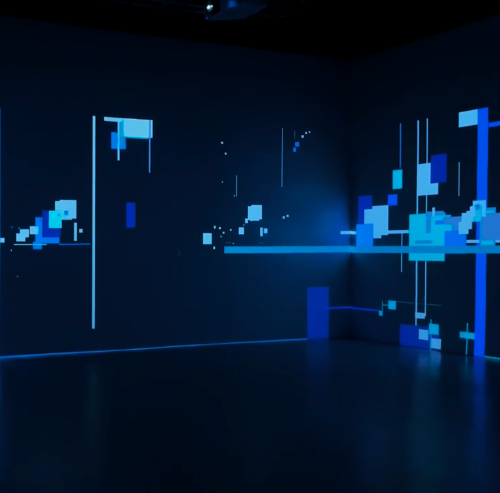

Partir del propio hábitat hacia otro lugar.


Migrar es el acto de crecer, cambiar y transformarse. Una nace en un espacio seguro y familiar. Esa experiencia se adapta, se reconstruye y se completa con la forma en que una crece, aprende a socializar y se encuentra con el mundo exterior.


Qué le sucede al alma que migra
Revivir esos momentos de la vida en los que somos llamadas a migrar. A veces por elección, otras veces no. Desde el momento de la creación, atravesando el desarrollo y llegando a la transformación de un ser.
Una curiosidad, un deseo de evolucionar, de convertirse en algo más, de reinventarse, impulsa a migrar. Aventurarse hacia lo desconocido, abrir un camino hacia otras formas. Entender nuevas realidades, cuestionar lo establecido, revolucionar, multiplicarse, migrar dejando una huella.

